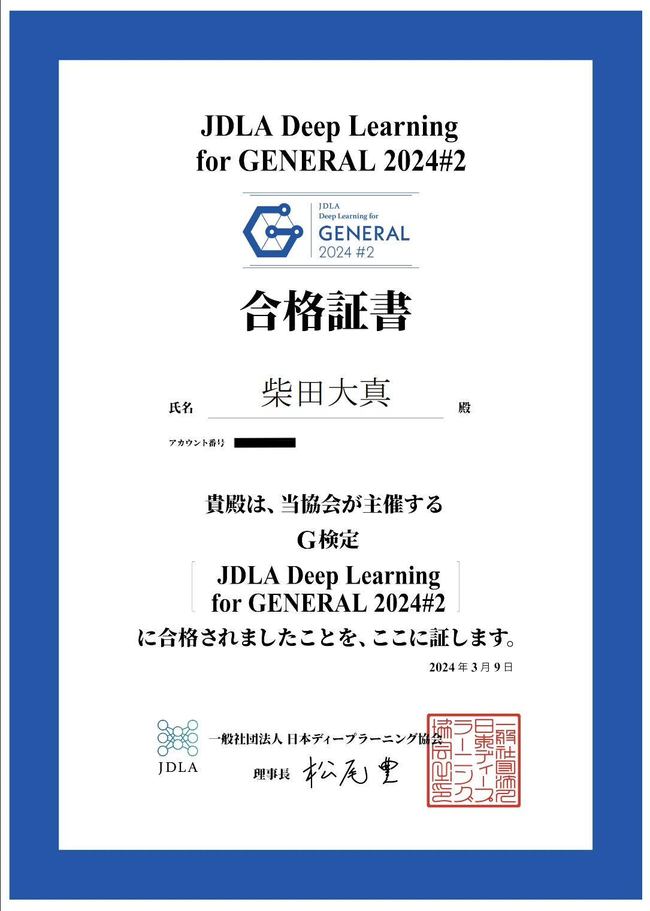
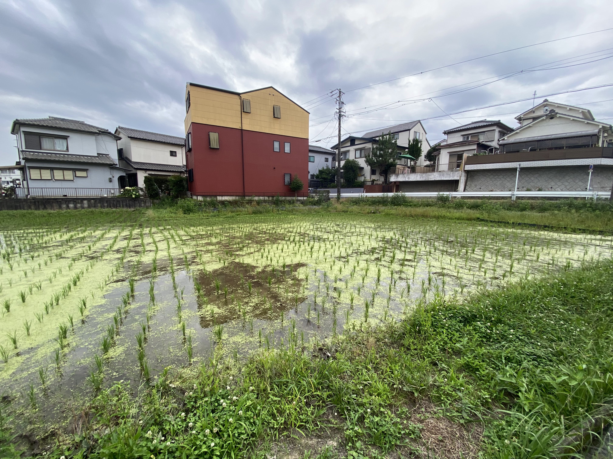
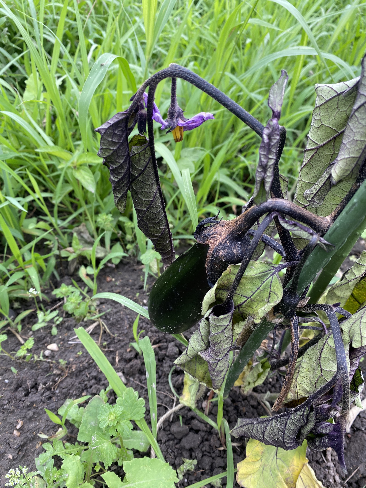
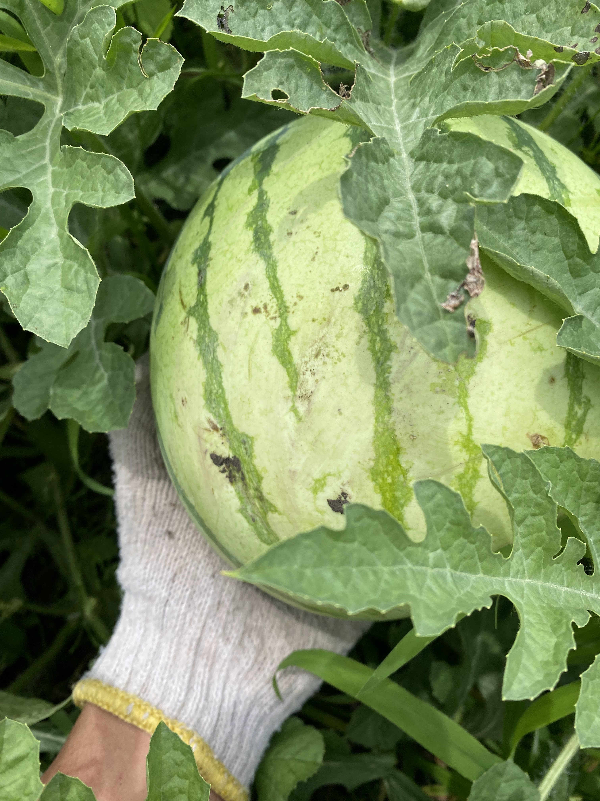

I am researching the field of machine unlearning in deep learning.
・What is Machine Unlearning?
Machine unlearning is a technique used to make a pre-trained model "forget" specific information.
With the recent widespread adoption of generative AI, it is gaining attention from a privacy protection standpoint.
・Research Achievements
I have submitted a paper related to machine unlearning to the 24th Forum on Information Technology (FIT 2025) and am scheduled to present it at FIT in September.
I became interested in the fields of artificial intelligence and machine learning during my junior year of university. So, I took the G Certificate (Deep Learning for GENERAL) exam and passed.

I am a member of my university's volunteer club and actively participate in volunteer activities.
In my junior year, I was responsible for managing the club's rice paddies and vegetable fields, as well as planning and organizing volunteer events that utilized them.
For the rice paddies, we held rice planting, harvesting, and a harvest festival for local elementary school students. This provided an opportunity for them to taste the rice we grew ourselves and to learn about the importance of food. We also contributed to the community by donating vegetables from our fields to a children's cafeteria in the same city.
In addition to these farming activities, I also participate in clean-up events, such as the "Fujimae Tidal Flat Clean-up Operation."


